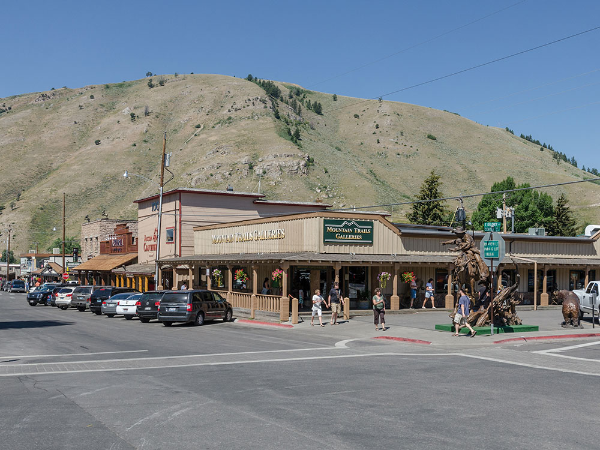
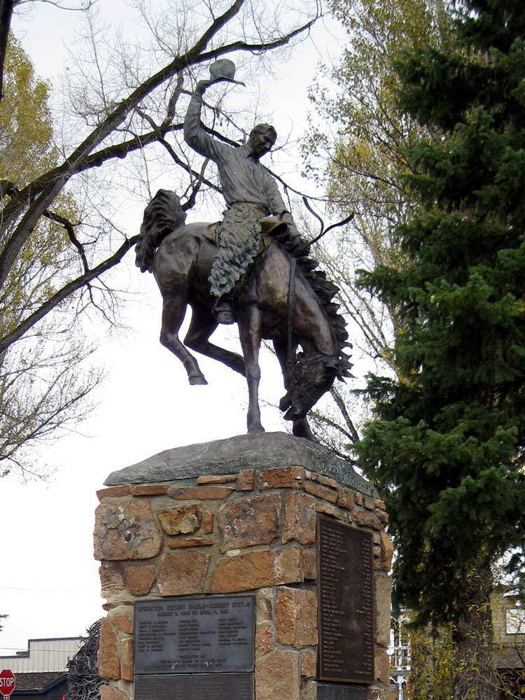
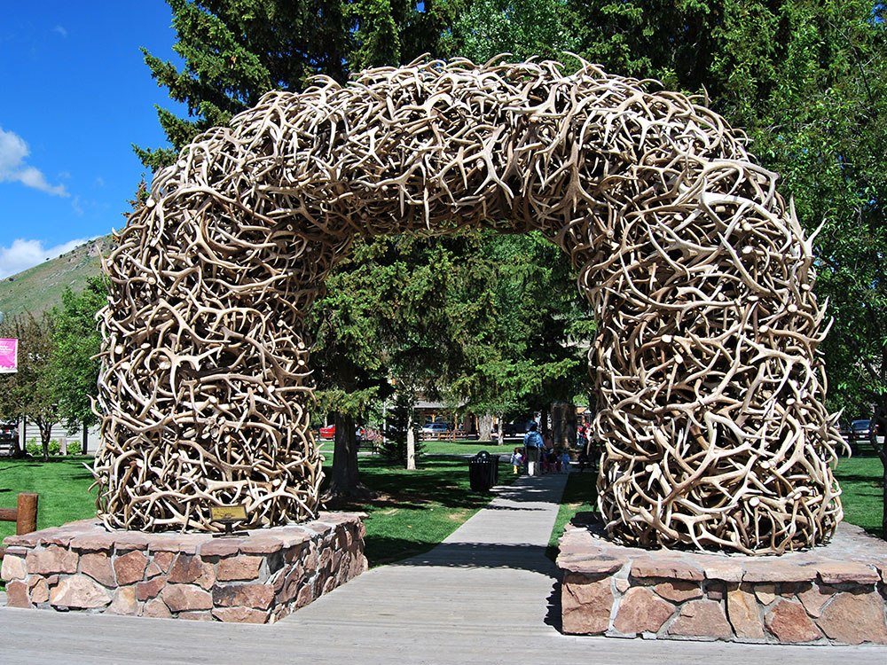
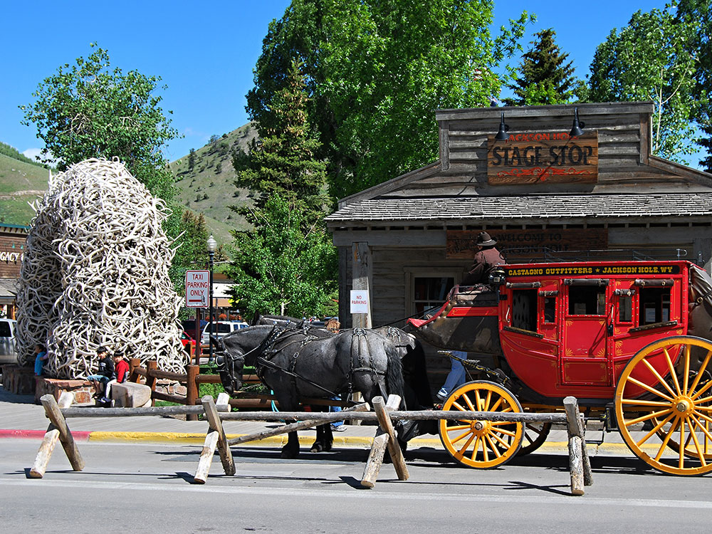
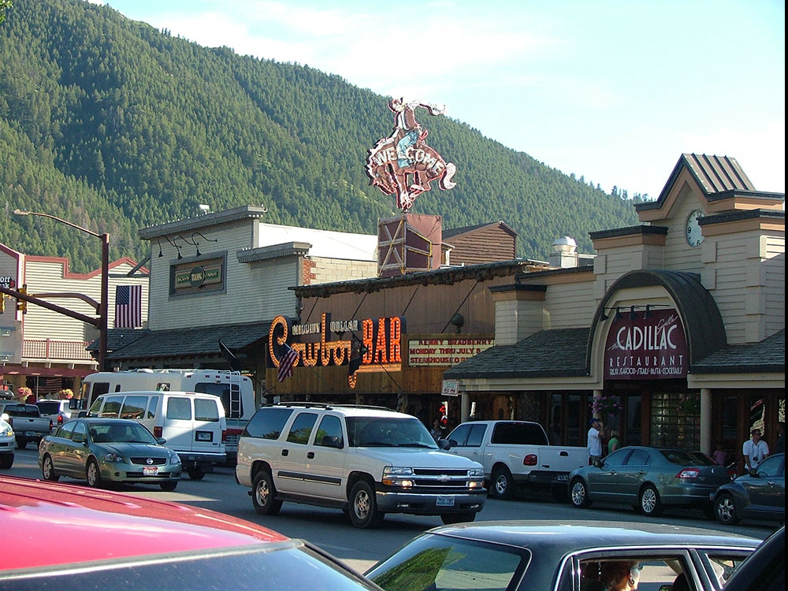
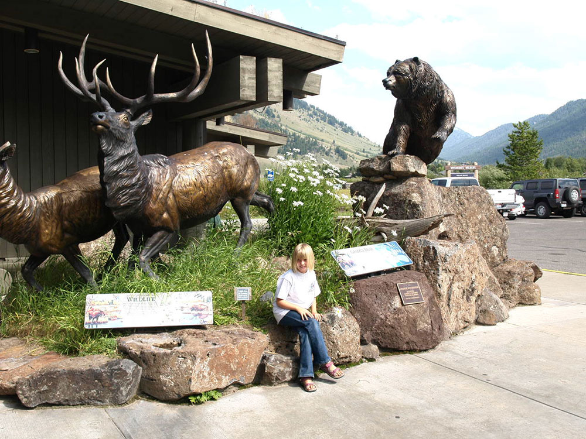

Town in the Jackson Hole valley is a popular tourist destination due to its proximity to the ski resorts as well as Grand Teton and Yellowstone National Park
General Information
Accepts America The Beautiful Pass
How to Get There
From Jackson Hole Airport (7 mi): Head south on US-191 into town, following signs to the Town Square in downtown Jackson.
Overview
Jackson is a town in northwestern Wyoming, at the southern end of the Jackson Hole valley, in the shadow of the Teton Range, and it is the gateway to Grand Teton National Park, about 10 miles north, and Yellowstone National Park, about 57 miles north. It is known for its Western atmosphere, with wooden boardwalks and elk antler arches over the town square, and its world-class skiing at Jackson Hole Mountain Resort and Snow King. With a mix of ranch life and wealthy visitors, Jackson is one of the most popular mountain destinations in the country.
Visitors come to Jackson for the national parks, for skiing in winter, and for the Town Square with its antler arches. They also come for the National Elk Refuge, for the National Museum of Wildlife Art, for rafting the Snake River, and for the Million Dollar Cowboy Bar and nightly rodeos.
History
The Shoshone, Crow, and other peoples hunted in the valley, and in 1807 John Colter, a member of the Lewis and Clark Expedition, was probably the first European American to see the area. Fur trappers called the valley "Jackson's Hole" for David Jackson, a trapper, in the 1820s, and homesteaders began settling the valley in the 1880s. The town of Jackson was incorporated in 1914, and tourism grew with dude ranches and the establishment of Grand Teton National Park in 1929, with the help of John D. Rockefeller Jr., who bought land and donated it. The Jackson Hole ski resort opened in 1965, and the town grew into a year-round destination.
Sightseeing and Popular Landmarks
Town Square, with its four elk antler arches, is the center of Jackson, surrounded by boardwalks, shops, and restaurants, and the Million Dollar Cowboy Bar has saddle bar stools and live music. The National Elk Refuge, just north of town, hosts thousands of elk in winter, with horse-drawn sleigh rides, and the Jackson Hole Mountain Resort, in Teton Village, has the Aerial Tram to the summit of Rendezvous Mountain, with a 4,139-foot vertical drop. Snow King Mountain is right above town, and the Jackson Hole Playhouse has Western shows.
Culture and Museums
The National Museum of Wildlife Art, overlooking the Elk Refuge, has the world's largest collection of wildlife art, and the Jackson Hole Historical Society and Museum shows the valley's pioneer past. The Center for the Arts hosts concerts, and the Grand Teton Music Festival in summer features world-class musicians. The Jackson Hole Rodeo and Old West Days celebrate the town's Western heritage, and the Jackson Hole Fall Arts Festival draws art lovers.
Parks
Grand Teton National Park has the dramatic Teton Range, lakes such as Jenny Lake and Jackson Lake, and wildlife including moose, bears, and elk, and Yellowstone National Park lies to the north. The Snake River is popular for float trips, and the Bridger-Teton National Forest and the Gros Ventre Wilderness offer hiking and camping. Teton Village and Snow King have mountain biking and hiking in summer.
Seasons and Weather
Jackson has a cold continental climate at an elevation of 6,200 feet. Summers are warm and dry, with highs in the 70s and 80s°F and cool nights, and winters are cold and snowy, with highs in the 20s°F and about 180 inches of snow in the mountains. Ski season runs from December to April, and summer is the peak season for the national parks.
Things to Do
Experience the Gateway to Grand Teton and Yellowstone National Parks
Jackson, Wyoming, is one of the premier outdoor destinations in the American West. Nestled in the heart of Jackson Hole Valley and surrounded by the Teton, Gros Ventre, and Snake River mountain ranges, the town serves as a gateway to Grand Teton National Park and Yellowstone National Park while offering year-round recreation, wildlife viewing, dining, shopping, and western culture.
Explore Grand Teton National Park
Just minutes from downtown Jackson, Grand Teton National Park features rugged mountain peaks, alpine lakes, scenic drives, wildlife viewing, and some of the most iconic hiking trails in the United States. The park is a major attraction for visitors throughout the year.
Ride the Jackson Hole Aerial Tram
The Jackson Hole Mountain Resort Aerial Tram carries visitors to the top of Rendezvous Mountain, where breathtaking views of the Teton Range, Jackson Hole Valley, and surrounding wilderness await. Summer visitors can access hiking trails, scenic overlooks, and dining at high elevations.
Enjoy Wildlife Viewing
The Greater Yellowstone Ecosystem surrounding Jackson is home to elk, moose, bison, pronghorn, black bears, grizzly bears, wolves, bald eagles, and many other species. Wildlife viewing opportunities are available throughout the valley and nearby national parks.
Explore Downtown Jackson
Downtown Jackson features western architecture, art galleries, museums, restaurants, boutiques, and the famous elk antler arches that frame the Town Square. Visitors can enjoy local culture while experiencing the charm of a classic Rocky Mountain town.
Float the Snake River
Scenic float trips on the Snake River provide opportunities to see wildlife, photograph the Teton Range, and experience the natural beauty of Jackson Hole from the water.
Hike Through Jackson Hole's Spectacular Landscapes
The area offers hundreds of miles of hiking trails ranging from easy lakeside walks to challenging mountain expeditions. Trails traverse alpine meadows, forests, canyons, rivers, waterfalls, and high mountain passes throughout Jackson Hole and Grand Teton National Park.
Top Trails
Taggart Lake Trail
Length: Approximately 3 miles round trip
Elevation Gain: Minimal
Difficulty: Easy
One of the most popular hikes in Grand Teton National Park, this trail leads to a scenic alpine lake with stunning views of the Teton Range reflected in the water. It is ideal for families and first-time visitors.
Cascade Canyon Trail
Length: Approximately 9 to 15 miles round trip depending on destination
Elevation Gain: Moderate
Difficulty: Moderate to Challenging
This classic Grand Teton hike travels through a dramatic glacial canyon surrounded by towering peaks. Hikers are rewarded with waterfalls, alpine scenery, wildlife viewing opportunities, and some of the most beautiful landscapes in Wyoming.
Jenny Lake and Hidden Falls Trail
Length: Approximately 5 miles round trip
Elevation Gain: Moderate
Difficulty: Easy to Moderate
A Jackson Hole favorite, this trail visits scenic Jenny Lake, Hidden Falls, and Inspiration Point. The route offers incredible views of the Teton Range and access to some of the park's most photographed locations.
Goodwin Lake Trail
Length: Approximately 2.5 miles round trip
Elevation Gain: Moderate
Difficulty: Moderate
This popular local hike leads to a beautiful mountain lake surrounded by forests and mountain scenery. It is a rewarding option close to Jackson and suitable for a half-day adventure.
Cache Creek Trail
Length: Approximately 2.5 miles and longer options available
Elevation Gain: Gradual
Difficulty: Easy
Located near downtown Jackson, Cache Creek follows a mountain stream through forests and aspen groves. The trail system connects to numerous routes and is popular with hikers, runners, and mountain bikers.
This article uses material from Wikipedia as well as information from official tourism and institutional sources. Key references include Visit Jackson Hole, National Park Service Grand Teton National Park, Jackson Hole Mountain Resort, National Museum of Wildlife Art, Wyoming Office of Tourism, and National Weather Service Riverton. Wikipedia material is from the articles "Jackson, Wyoming" and "Jackson Hole", and is available under the Creative Commons Attribution-Share-Alike License 3.0.







.jpg){kind=link}


